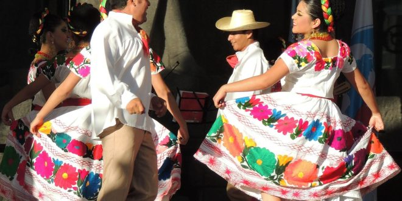

Jarabe tapatío (1910)
Este baile nació como estandarte de unidad nacional, pues incluye los estilos dancísticos más famosos de diversas regiones en una mescla nominada “jarabe”. Fue bailado por primera vez en 1910 en el Teatro de Coliseo de la Ciudad de México.
Los viejitos
Las danzas de México ha resultado muy sorprendente en todos sus aspectos para las personas que no la conocen, ya que sus bailarines se disfrazan de » Viejos » . La cual es representada en Michoacán y nació en el pueblo de Jarácuaro. Desde los inicios, esta danzas de México, que han dado gran importancia a los tiempos prehispánicos, el cual se realizó dentro del ritual en honor al dios viejo o dios del fuego. El disfraz que llevan consiste en una máscara de madera, bastón, zapatos con suela de madera, pantalón, camisa blanca y un sarape o zorongo.

Huapango
El huapango se realiza en distintos estados entre los cuales podemos mencionar a Hidalgo, Puebla, San Luis Potosí y Veracruz. Por lo tanto, en los territorios podemos encontrar muchas diversidades, aunque tienen ciertas características en común.
Esta danza de México se suele bailar sobre una tarima de madera. Normalmente, el hombre utiliza un pantalón blanco y un sombrero típico, y, la mujer, una falda blanca bastante ancha y larga. La música es interpretada por tres personas, que tocan instrumentos como el: violín y la jarana y la charranguera ( dos tipos de guitarra ).

La bamba
La bamba es una de las danzas de México (mestizas) que han representado en su mayoría al estado de Veracruz. En ella se combinan las seguidillas y fandangos de España con los zapateados y guajiras que son de origen de Cuba. Este baile generalmente se representa por una única pareja y el color que domina en ambas personas es el color blanco. Entre las dos, forman un lazo con el movimiento de sus pasos, con la sincronización adecuada y la concentración que se debe.

Danzas de México prehispánico
Entre las danzas prehispánica podemos mencionar las danzas de México de la Cultura Azteca, Cultura Tolteca, la Cultura Maya, la Cultura Zapoteca y entre otras culturas que conforman cada de las Regiones Culturales de México tanto como la Religión en México.
Mediante varios siglos, las danzas de México de la época prehispánica han existido en México como una manera de las ceremonias de los ritos que hacían, que hace recordatorio del lenguaje de la simbología de nuestros antepasados. Con la finalidad de que las danzas de México establecieran una comunicación con lo religioso y lo sagrado, una forma de oración que ponía al danzante en contacto con una realidad más amplia, a la vez fuera y dentro de sí mismo.

Danzas mestizas de México
Entre las danzas de México en los tiempos de los mestizos podemos hacer mención de dos de ellas, que fueron muy conocidas que a pesar del tiempo siguen siendo de alguna manera reconocida.
Vals
El vals se define como un elegante baile, se podría decir que tradicional, el cual se caracteriza por un baile lento y suave, que es de origen del Toril ( Austria ) a mediados del siglo XII. El vals comprendió su rango de los nobles durante los años de 1760 en Nieva, y se expandió rápidamente por otros países. Algunos autores creen que el vals tuvo su origen en la volt, danza de baile en tres tiempos practicada durante el siglo XVI. La palabra vals nació en el siglo XVIII viene de » wälzen » ( rodar, girar en alemán ), cuando el vals se introdujo en la ópera y en el ballet.
Mazurca:
Mazurca es de las danzas de México que se puedes asociar con otros rangos como son el: oberek o mazur, que hacen representación de las culturas rurales de México. Una forma de la más usada de la música. El ritmo, la lírica, composición y la producción de sonido, y los elementos de armonía de blues se derivan de la música africana y del concepto musical de los afroamericanos.